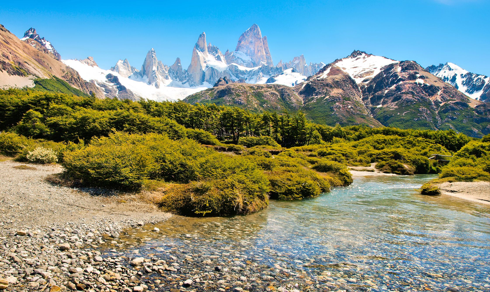
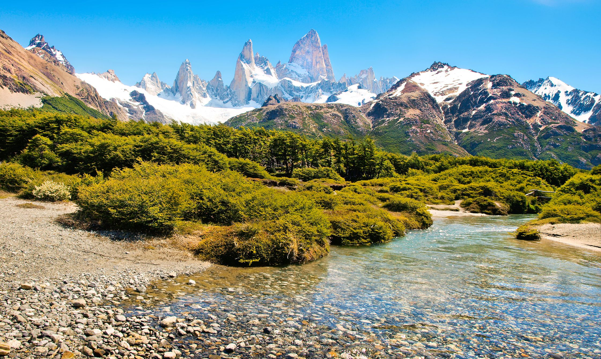

I grew up in a rural region of central BC, so I spent a lot of time in the mountains. It is where I learned to have a passion for understanding how things work. Growing up, this revolved around a curiosity of engineering projects I would build out of cardboard and wood. This stemmed into an interest in renewable energy systems and biology; which are seemingly as alike as they are dissimilar.
As time went on it became clear that the bridge between my interests was embedded within the tech world. It achieves both an interest in building and engineering, with an aspect of biology in the biomimicry of many designs. What I love about it is that it is endlessly challenging and the opportunity for creation is anything but finite.
Thank you for visiting my webpage!